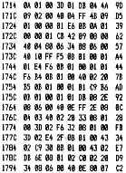
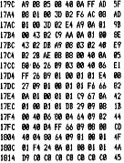
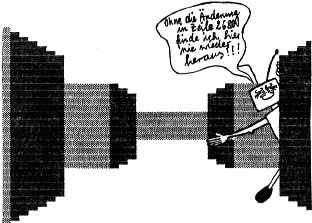

80-Bus Journal |
April 1983 · Ausgabe 4 |
|  |  |

An sich bin ich der Meinung, dass eine „Entgegnung auf die Entgegnung“ nur die beiden Streithaehne befriedigt, und der Rest der Leser leise gaehnend weiterblaettert, aber da mich Herr Bach dezidiert mit einer Frage konfrontiert, muss ich doch mit meinen Gepflogenheiten brechen.
Gesaifte Schtring-Aerrays sind gerettete Zeichenketten-Felder (vor wem?), und in Dateien kann man Daten ablegen, das sind die Quarks oder Source Codes, das sind die Source Files b.z.w. Source Dateien (siehe auch 80-bus Journal Februar 1983 Seite 12 Zeile 5) oder, oder …
Ich gebe Herrn Bach, den ich wegen seiner ausgefuchsten Programme sehr schaetze Recht, nicht in Extreme zu verfallen, aber die Schmerzgrenze liegt sicher individuell verschieden.
So – Kriegsbeil begraben, o.k ?
Gerhard Klement, Wien
Mein Nascom 1 laeuft mit einer selbstentwickelten Pufferplatine, die auf einen 19-Zoll-Rahmen mit zur Haelfte Siemens- und zur anderen Haelfte ECB-Bus-kompatiblen Buchsenleisten fuehrt. Die Karte uebernimmt gleichzeitig die Dekodierung der Nascom-Platine. Auf dem Siemens-Bus laufen schon die RAM-16 und die ROM/PROM-Platine von Graf-Elektronik (Deshalb habe ich auch den Siemens-Bus eingebaut). Falls Interesse besteht kann ich den Schaltplan noch einmal sauber zeichnen und einen Artikel dazu Schreiben. Die Platine habe ich in Faedeltechnik erstellt, aber vi leicht entwirft jemand ein Layout dazu.
in Entwicklung befindet sich eine Platine, die je nach Bestueckung als Steuerplatine ( – EMUF ) eingesetzt werden kann und bis zur voll dekodierten CPU-Karte mit 2K RAM und 2K EPROM fuer ein ECB-Bus System ausgebaut werden kann. Natuerlich hat die Karte die gleichen Speicher- und Port-Adressen wie das Nascom-System.
Von dieser Schaltung existiert allerdings bisher nur der Schaltplan und noch kein Muster.
Jürgen Loh, Radevormwald
.... Um die neue Zeitschrift zu unterstuetzen, schicke ich ein paar meiner Programme vorbei. Wenn es interessiert, kann ich auch beschreiben, wie ich mir eine CTC-Platine gebastelt habe, auf die man ohne weiteres noch PIOs, SIOs, UARTs, DMAs und weitere CTCs anschliessen kann. (Wir sind sicher, daß es interessiert! Red.)
David Kastrup, Aachen
In Wien hat sich ein Computerclub gebildet, der den Bau des MC Computers forcieren will. Der Leiter der Gruppe, dessen Geraet schon funktioniert,hat die wohltuende Eigenschaft, Nascom2 Besitzer zu sein. Ich hoffe, Ihn durch gute Worte soweit zu bringen, dass er sich beim Bau der Floppies seines Nascoms erinnert. Sollte etwas in dieser Richtung geschehen, werde ich davon berichten, da ich mich fuer das Floppy Projekt der Gruppe anschliessen will. Als Osborne1 User verzichte ich dabei gerne auf CP/M; denn wer einmal Full Screen Editing gewohnt ist, der hat keine Freude mehr an den tristen Editiermoeglichkeiten dieser Maschine, so gut sie sonst auch ist. Ich war so leichtsinnig, die Floppy zu bestellen, bin aber mit meinen Hardwarekenntnissen eher schwach. Sollte wider Erwarten das System zu leben beginnen, sende ich die Freudenbotschaft plus Erfahrungsbericht an das Journal.
Gerhard Klement, Wien
| Seite 19 von 28 |
|---|